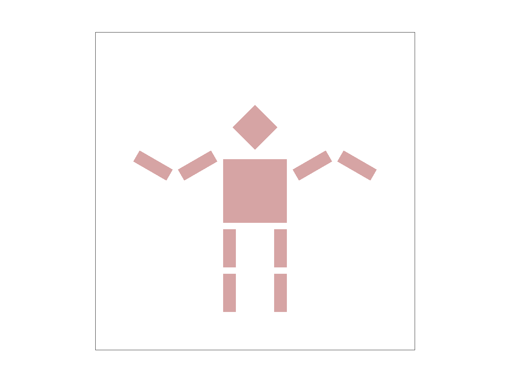

Cs184 Project 1 . . . rasterizer
Sofia howard-jimenez
Overview
In this assignment I implemented a simple rasterizer with capabilities for drawing triangles, supersampling, transforms, and texture mapping. The result was a functional graphics renderer that was able to make some pretty cool images!
Task 1
The first task of the project was to implement basic triangle rasterization. In order to do this, I first found the minimum and maximum x and y values out of the given three coordinates. These values are important because they tell you the corners of the bounding box for checking if a given pixel location is within the lines of the triangle. I looped through the bounding box by using a double for loop with x and y initialized to the minimum respective values. Within the loops, I then found whether or not that point was inside the triangle by performing the three line test, and if the point was inside the triangle, would then call rasterize_point (which I later changed to use fill_pixel) on that pixel.

This algorithm is no worse than one that checks each sample within the bounding box for a triangle because it is performing this algorithm.
Task 2
In order to implement supersampling, I updated RasterizerImp::set_sample_rate(), RasterizerImp::set_framebuffer_target(), RasterizerImp::rasterize_triangle(), RasterizerImp::fill_pixel(), and RasterizerImp::resolve_to_framebuffer().
First, I updated set_sample_rate() and set_framebuffer_target() to allow for a sample_buffer that could be dynamically sized based off of the width, height, and current sample_rate of the renderer. Then, in rasterize_triangle, I added two additional for loops to add additional sub-pixel points to the loop based off of the square root of the sample rate. I also had to update fill_pixel to take in an additional index so each entry in the sample buffer has their own index. I also had to update resolve_to_framebuffer() as that is where the actual averaging of the color values and supersampling takes place before the pixel is drawn to the framebuffer.
sample rate = 1
sample rate = 4
sample rate = 16
Supersampling is useful to reduce the prominence of "jaggies" in an image and ultimately improve image quality. This was the most difficult part of the project for me!
Task 3
I made this robot do the wave :3
Task 4
Barycentric coordinates allow us to calculate a point given three coordinate values. An easy way to visualize this is to use triangle color interpolation.

As seen in the image to the left, each vertex of the triangle represents a different color value, and using barycentric coordinates, we can derive every other color as a different weighted combination of the three vertices.

Task 5
Pixel sampling is implemented by looking up the position of the texture as each pixel is being scanned. Sampling is important because textures may not always map 1:1 from the texture space to the world space.
In this project, I implemented nearest pixel sampling and bilinear sampling:
Nearest Sampling uses the color of the texel closest to the pixel center, whereas Bilinear Sampling samples the four nearest texels and find the weighted average according to the distance between the point and the texels.
nearest sampling, sample rate = 1
bilinear sampling, sample rate = 1
nearest sampling, sample rate = 16
bilinear sampling, sample rate = 16
Task 6
Level sampling allows us to look at texture spaces that may not have the same size as the world space. We can do this by using mipmaps, which we can think of as pyramids of images in descending resolution.
In order to determine the correct mipmap level, we can either sample from Level 0, the nearest Level, or use bilinear sampling on the two nearest levels
l_zero, p_nearest
l_zero, p_linear
nearest, p_nearest
l_nearest, p_linear